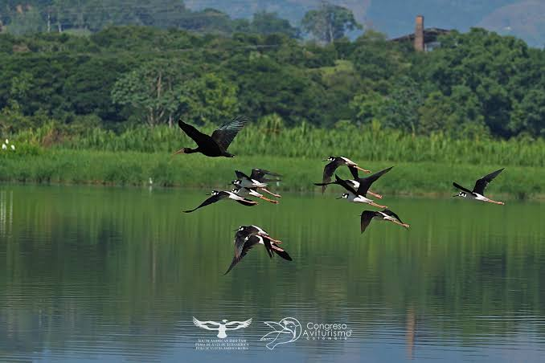

🇨🇴 Colombia: Un País de Muchos Climas
Nuestra riqueza nos hace especiales, pero también vulnerables

🌎 ¿Por qué nos afecta tanto?
Colombia está justo en la zona donde el sol da con más fuerza y donde se encuentran grandes masas de aire y corrientes marinas. Por eso, cuando El Niño o el Super Niño cambian el clima del mundo, aquí lo sentimos de forma directa.
Tenemos costas en dos océanos, montañas altas, selvas, llanuras y desiertos. Esa variedad nos hace uno de los países con mayor riqueza natural del planeta, pero también significa que cuando cambia el clima, casi ninguna zona queda sin notarlo.
☀️ ¿Qué pasa cuando llega El Niño?
En la mayor parte del país, especialmente en la zona Andina, la costa Caribe y los Llanos, disminuyen las lluvias. Esto trae consecuencias que podemos ver y sentir:
- Los ríos bajan de nivel y los embalses tienen menos agua para las ciudades y los campos
- La vegetación se seca y aumenta el riesgo de incendios en bosques y páramos
- Los cultivos sufren por falta de agua y los alimentos pueden escasear o subir de precio
- En las costas, el mar se calienta y afecta a los peces y a las familias que viven de la pesca
- Los páramos, que son nuestras fábricas de agua, se vuelven más frágiles
En la zona del Pacífico, por el contrario, puede llover más de lo normal. Así que mientras unas zonas sufren por sequía, otras pueden sufrir por exceso de lluvia. Todo depende de cómo se muevan los vientos.
💧 Nuestra mayor riqueza: el agua
Colombia tiene mucha agua, pero no siempre está donde la necesitamos ni cuando la necesitamos. Los páramos guardan el agua que bebemos millones de personas. Cuidarlos es cuidar nuestra propia vida. No debemos permitir que se quemen, que se construya encima o que se contaminen.
Cuando llega la sequía, cada gota cuenta. Ahorrar agua no es solo una recomendación: es una responsabilidad con quienes viven hoy y con quienes vendrán después.
🌿 Lo bueno que tenemos
Ser un país biodiverso es nuestra mayor fortaleza. Tenemos más especies de aves, de orquídeas y de muchas familias de animales que casi cualquier otro lugar del mundo. Esa riqueza nos da esperanza: si la protegemos, la naturaleza tiene capacidad de recuperarse.
Plantando árboles, cuidando el agua y enseñando a otros, podemos ayudar a que nuestro país resista mejor los cambios del clima. Colombia no es solo un lugar donde vivimos: es algo que construimos todos los días con lo que hacemos.
"Amar a Colombia es cuidar su tierra, su agua y su gente."